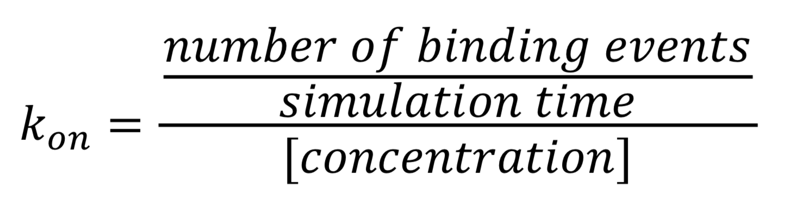

Small molecule binding
The material offered in this page is LEGACY material. This means that it either pertains to older iterations of the Martini force field and/or that it is no longer actively supported. However, this does not mean that there aren’t cool things to be learned here! Have a look! If you are looking for the current iterations of the Martini force field lectures or hands-on tutorials, click here to go back!
In this tutorial, we will set up a coarse-grained (CG) simulation in the new Martini 3.0 force field of a protein – ligand system. The ligand will be initially placed in the solvent phase of the system, and throughout the simulation find the protein binding pocket. As an example, we will simulate the binding of benzene to the L99A mutant of T4 lysozyme. Setting up a CG simulation consists of two main steps, followed by the analysis:
Note1: This tutorial, now based on the Martini 3 open-beta version (v.3.0.b.3.2), will be updated as soon as the final parameters of Martini 3 are available (the paper is under review right now).
Note2: Martinize2 can also be used to martinize your protein. However this new version is still under development. You can take martinize2 from https://github.com/marrink-lab/vermouth-martinize. Any issue should be reported in the github page.
Note3: For protein complexes (e.g., dimers, tetramers, etc.) you should consider using the “–merge” flag in martinize. In this situation, an elastic network can be added between the proteins. These two approaches are important to better mimic hydrogen bonds and to perfect packing, which is essential for a stable protein complex (for the same reasons for which it is needed for a folded protein).
Converting atomistic structure to CG resolution
1A. Download the crystal structure of the T4 lysozyme from the Protein Data Bank (PDB)
wget http://www.rcsb.org/pdb/files/181L.pdbAlternatively, you can visit the PDB website (https://www.rcsb.org/), search for the structure, and click on Download Files.
1B. Generate Martini topology and coordinates
The atomistic structure of T4 lysozyme (PDB: 181L) can be used directly as input for martinize.py to produce both the coordinates (CG.pdb) and topology (CG.top) of the CG model. Have a look at the help function to list the available options by running martinize -h. Please be carefull and use the version or martinize distributed with the Martini 3 open-beta version. The martini303v.partition file should be in the same folder where you are executing the command.
./martinize -f 181L.pdb -ff martini303v.partition -x CG.pdb -o topol.top -dssp dssp -elasticHere we are using the version 3.0 of the Martini force field (-ff). The secondary structure of Martini proteins should be explicitly defined. This can be achieved by adding a set of long harmonic bonds (-elastic). The magnitude of the elastic force constant can be specified with -ef. A force constant of 500–750 kJ/(mol nm2) is suitable in most of the cases. An easy way of determining the secondary structure of each residue in the protein is by using the DSSP program. When using the -dssp option, a path to the binary file must be provided. You can download the binary file from the CMBI website (https://swift.cmbi.umcn.nl/gv/dssp/). Note that the downloaded PDB file contains not only protein residues but also three additional molecules: water (HOH), benzene (BNZ), and 2-hydroxyethyl disulfide (HED). You can delete them prior to generating the CG structure, or leave them in the file. HETATM atom types are ignored by martinize.
1C. Add dihedral corrections to Martini topology
If all went well, the previous step should have generated three files: CG.pdb, protein_A.itp, and chain_A.ssd. Take a look into the *.ssd file, the secondary structure each residue belongs to is specified under STRUCTURE. The *.itp file contains almost all bonded parameters required to define the behavior of the protein. We just need to add some dihedral corrections to describe SC-BB-BB-SC interactions. You should make a backup copy of Protein_A.itp.
./bbsc.sh Protein_A.itp 181L.pdbThis step will have appended additional angle (SC-BB-BB-SC) and dihedral (SC-BB-BB and BB-BB-SC) parameters to the .itp file. Note that bbsc.sh is only there to call the actual VMD script (addDihedral.tcl) handing it over the Protein_A.itp and CG.pdb as arguments.
Setting up the simulation box
2A. Solvate the protein
Since we now have both the coordinates and topology of the Martini 3 protein, we can put the protein in a simulation cell, and add water and ions.
/usr/bin/python2.7 insane.py -f CG.pdb -o CG.gro -pbc cubic -box 10,10,10 -salt 0.15 -charge auto -sol WYou can look for more details about the insane.py script here. The output file (CG.gro) contains NA+, CL-, and W residues. Check how many and add specify it in the CG.top file.
[ molecules ]
; name number
Protein_A 1
WN 8846
TNA 93
TCL 101Don’t forget to also include the Martini 3 force field files at the beginning of the CG.top.
#include "martini_v3.0.3.itp"
#include "martini_v3.0_ions.itp"
#include "martini_v3.0_solvents.itp” The first *.itp file contains information about non-bonded interactions between all types of Martini 3 beads. The second and third files are more specific and define standard Martini 3 ions and solvents.
2B. Add the ligand to the simulation box
The crystal structure downloaded from the PDB website contains a benzene molecule crystalized in the binding site. We want to see if a CG model of benzene is capable of correctly finding the binding site of T4 lysozyme and bind to it in a pose that resembles the crystallographic binding mode. The Martini 3 topology of benzene is already provided in martini_v3.0_solvents.itp. Martini 3 benzene consists of three equidistant beads type TC4, bonded together by constraints of length 0.291 nm. Make a copy of CG.gro, rename it CG_benzene.gro and open it in a text editor. At the end of the file (just before the cell length), add the coordinates of the ligand from the file benzene.gro. Don’t forget to update the total number of atoms in the first line of the CG_benzene.gro file. You should try to place the benzene molecule in the solvent part of the simulation box. Don’t worry too much about the exact ligand coordinates; they will be adjusted in the minimization phase. Just try to place the ligand in a reasonable spot. The final CG.top file should look like this:
#include "martini_v3.0.3.itp"
#include "martini_v3.0_ions.itp"
#include "martini_v3.0_solvents.itp”
[ molecules ]
; name number
Protein_A 1
WN 8846
TNA 93
TCL 101
BENZ 12C. Start the simulation
gmx grompp -p CG.top -f min.mdp -c CG_benzene.gro -maxwarn 10
gmx mdrun -v -c CG-em.gro
gmx grompp -p CG.top -f eq.mdp -c CG-em.gro -maxwarn 5 -n index.ndx
gmx mdrun -v -c CG-eq.gro -x traj_comp-eq.xtc
gmx grompp -p CG.top -f md.mdp -c CG-eq.gro -maxwarn 5 -n index.ndx
gmx mdrun -v -c CG-md.gro -x traj_comp.xtc3. Analysis
Once the simulation has finished, a trajectory (traj_comp.xtc) should have been generated. An RMS alignment of the protein will take care of the rotational and translational motion.
gmx trjconv -pbc mol -center -ur compact -s topol.tpr -f traj_comp.xtc -o temp.xtc
gmx trjconv -fit rot+trans -s topol.tpr -f temp.xtc -o trajfitted.xtc -n index.ndxTo do the alignment, an index file containing the list of backbone atoms (BB) must be provided. It can be generated with:
gmx make_ndx -f CG-eq.gro -n index.ndx << EOF
a BB
q
EOFYou can visualize the trajectory in VMD. More information on visualizing CG Martini simulations is provided here.
vmd CG-eq.gro trajfitted.xtcDo you see any binding events taking place? Additionally, the occupancy of the benzene molecule across the trajectory can be calculated by issuing the following commands in VMD:
>> set sel0 [atomselect 0 "resname BNZ"]
>> volmap occupancy atomselect0 -res 1.0 -allframes -combine avg -o volmap_out.dxLoad the generated file (volmap_out.dx) in VMD, and select the isosurface representation. The “isovalue” control allows you to adjust the occupancy threshold. What regions of the protein have the highest occupancy? Is the binding site / binding tunnel among them?
For this particular system we obtained around 2-9 binding events per 30 μs of simulation time. If you run the simulation long enough that several binding events are observed, the kon of benzene – T4 lysozyme can be calculated as follows:
